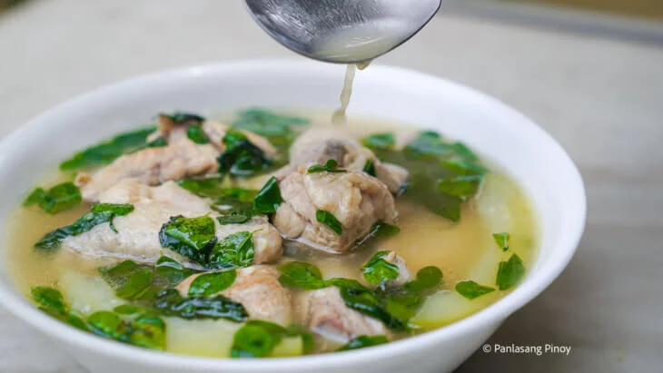

Back to Home
Tinolang Manok

Tinola is a traditional Filipino chicken soup dish that is typically made
with chicken, green papaya, and chili leaves. It is flavored with ginger,
garlic, and fish sauce, making it a comforting and nutritious meal.
Ingredients:
- 1 whole chicken, cut into serving pieces
- 1 medium green papaya, peeled and sliced
- 1 bunch of chili leaves (or substitute with spinach)
- 1 thumb-sized piece of ginger, sliced
- 4 cloves garlic, minced
- 1 medium onion, sliced
- 4 cups chicken broth
- 2 tbsp fish sauce
- Salt and pepper to taste
Instructions:
- In a large pot, sauté garlic, onion, and ginger until fragrant.
- Add the chicken pieces and cook until they are lightly browned.
-
Pour in the chicken broth and bring to a boil. Reduce heat and simmer
for 30 minutes or until the chicken is cooked through.
-
Add the sliced green papaya and continue to simmer for another 10
minutes or until the papaya is tender.
- Season with fish sauce, salt, and pepper to taste.
-
Add the chili leaves and cook for an additional 2-3 minutes until
wilted.
- Serve hot with steamed rice.